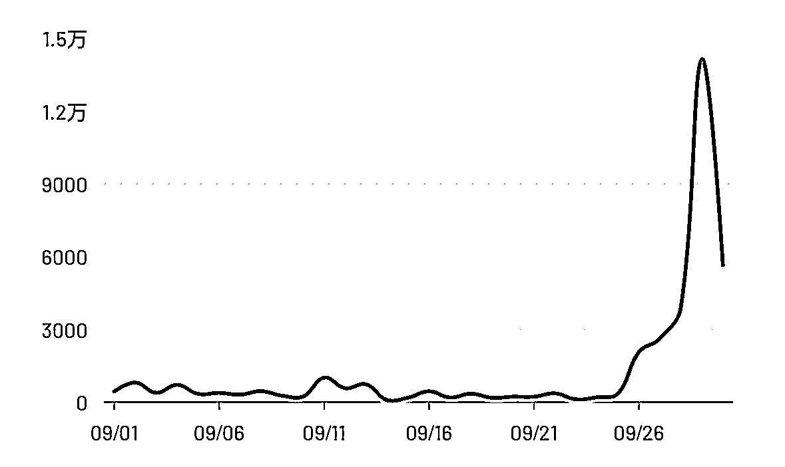
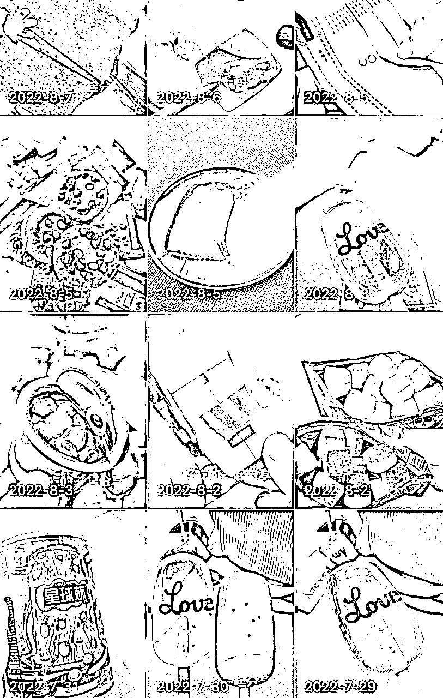
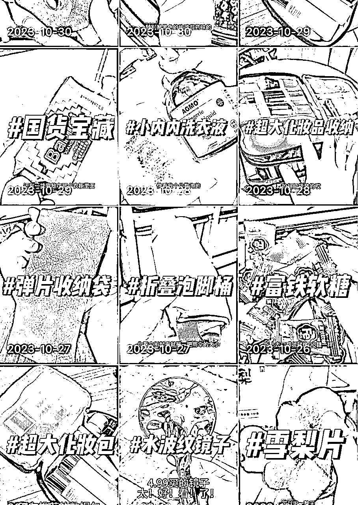
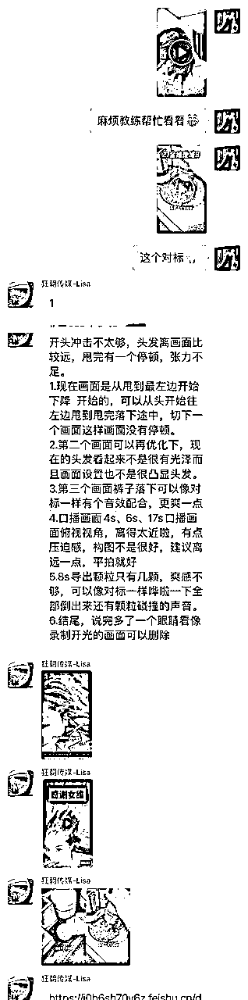
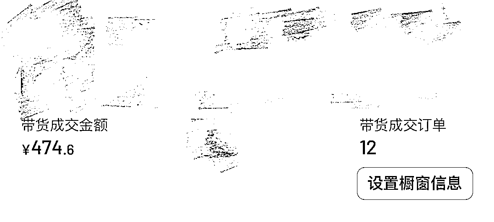
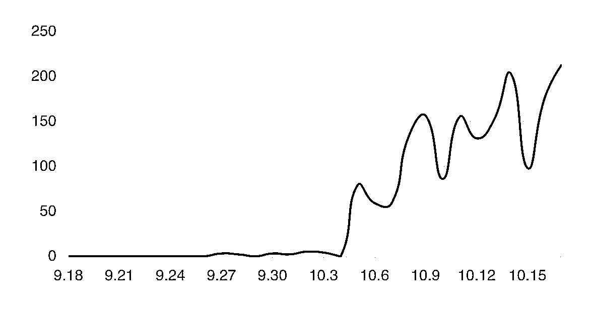
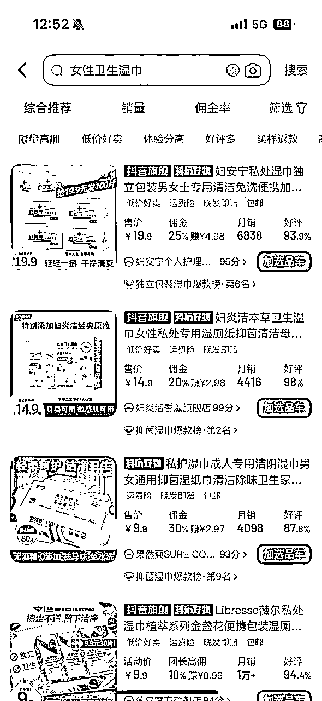
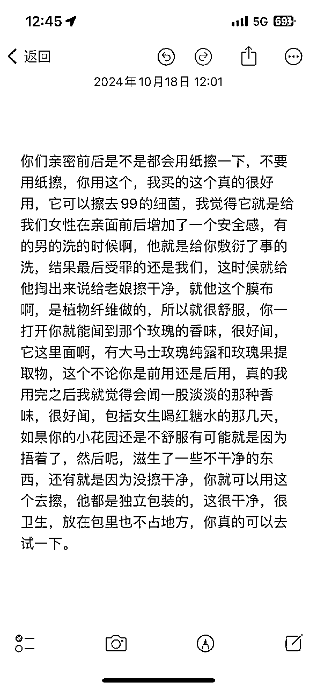
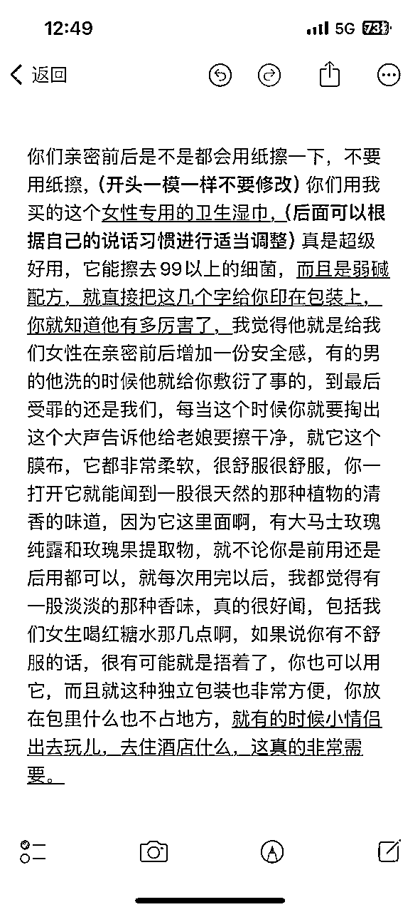

来源：https://nneqojylf4.feishu.cn/docx/I7O8dBrmNoVDEixbrbYc0AmYnMf
没想到有一天我也能成为经验分享的圈友之一！哈哈！
自我介绍一下，我是生菜，来自三线城市的在职搞副业的宝妈，从大学毕业以后一直有在尝试各种副业，包括小红书、微商、代购、奢侈品二手交易，目前的副业专注在抖音带货。
先说下我的成绩：加入「抖音精致达人」航海的第15天爆单，同时爆了两个视频，一个11w播放，一个7w播放，15天账号盈利1.5w。给大家分享一下我九月份的数据曲线图。
9.13开始发布加入航海后的第一条视频，9.26就有个视频爆单了。

在此之前，我已经做了2年的抖音带货了。22年的时候，机缘巧合刷到了一个博主给大家分享自己带货小号的爆单业绩，我记得好像是每天有2-3k的收入吧。对比我每个月的工资，实在是有很大的吸引力。从此，开启了我漫长的带货之路。就这样，一个完全没接触过电商，不会拍视频的素人就这么大胆的闯进了一个全新的世界。
22年入局选择的赛道是零食，原因是客单价低、容易开单、退款也低，很多博主都在说更适合新人。
那时候抖音带货真人出镜的不多，也没有精致达人的概念，还是桌拍的天下。虽然我刷到的那个日入2-3k的博主是真人出镜，但是我那时候认知比较低，没有意识到真人出镜能够降维打击，选择的也是不出镜的桌拍账号。
我就这么一股脑的闷头拍，拍了将近一年也没怎么出单。

23年转战了百货赛道，很幸运选到了一个非常小众的品，靠这个品持续出了几千单，然后其他品也会零散出一些单。

今年加入生财以后，猛看了很多关于带货的各种精华贴、航海手册。4月份的时候，爆了一个香薰蜡烛，GMV最高峰有20w/月。但是没有能力复制爆款，参加航海之前的GMV跌到了3k/月。
一直到加入这次抖音精致达人的航海，一大堆实操干货，每个视频教练都会帮你复盘，加上之前积累起来的认知和经验一下子爆发，就有了这次的爆单！

参加航海之后，首先把我拉到了新手群，新手群有针对新手的爆品，根据教练给的新手爆品表进行申样。
收到样品后，再根据样品表里面的对标视频进行拍摄，拍完之后把自己视频发到群里，教练会帮我复盘视频的问题，给出修改意见。
在新手群发了2-3个视频之后，我就被教练拉进了冲刺组，这里面差不多是能力更高一些的同学了，继续在冲刺组拍冲刺组的爆品。
目前总共带了10个爆品，拍了41视频。
接下来，我从「经验篇」「行动篇」和「心态篇」三个部分来分享一下，这次航海的经历。
在没有加入航海之前，我的选品50%是来自于精选联盟，40%是对标账号，10%是后台商家的邀约。
虽然这个数据看上去没什么大问题，但是里面有非常多你自己亲自选过品才能体会到的问题。
第一：主观，你选的品大概率是你自己喜欢的品，你喜欢的不代表市场喜欢，而且自己联系商家你需要及时给商家交作业，常常会打乱你的拍摄计划，就非常被动；
第二：好不容易选到了一个你喜欢市场也喜欢的品，但是有可能热度过了，没有流量了；
第三：有时候你会看到一些数据很好的品，有可能是投流品自然流跑不出去；
第四：选的品类很杂，不同品类的东西拍摄方式是不一样。对于等级较低的达人来说，选品在精不在多，需要测到适合自己的品！如果流量对比你之前发的视频高个2倍左右，出单数量也比你之前多1倍，这样的品你就可以一直拍、反复拍，每天发一个都不为过！
我现在的选品都是直接选教练帮我们整理好的品，就相当于是一次性解决了上面所有问题！
但是这次爆单的品不是选品库里面的，我给大家分享一下为什么我会选这个品。
1、之前我用非爆款文案拍摄这个产品的时候出过十几单。这就给了我一个信号，说明这个品是有市场的，我自己的非文案都能出单，如果换成爆款文案再拍一遍，就有机会爆单。底层逻辑就是用爆款文案拍出来的视频跑赢之前出过单的视频。

2、还有一点就是我看见了我的对标帐号，他拍这个产品也爆单了，这也给了我一个信号，就是近期这个产品的售卖数据是在往上走的，平台会给推流。

3、还有一个很重要的原因，是我之前同类型的产品爆过单，我再去选择这个产品拍摄的话，爆单的几率会更大一点。比如你之前爆过女性卫生湿巾，那其他品牌的女性卫生湿巾也可以去带一带。

我这次爆单的产品之前拍过5次左右都没有爆过。
我之前其实是意识不到我的视频是存在什么问题的，只是大概的知道我的水平还不不够，所以才没有爆单。
直到我加入了航海教练跟我说了一下我账号大概的问题：是出在文案和选品上，我就意识到我以前出过单的品是文案的问题，以前没出过单的品是选品的问题。
选品上面说过了，现在说一说文案。秘诀就是一定要抄爆款文案！一定要抄爆款文案！一定要抄爆款文案！因为只有市场验证过的才是能赚钱的！
而且是抄近期7-15天内爆过的文案！时间太久的会过了热度没有流量，就不要再去抄了！
到底怎么抄爆款，下面给大家举一个例子，以下是一个爆款文案：

这是我调整过的：

开头一定要一模一样，中间的卖点和结尾的促单可以根据自己的说话习惯去调整一点点，不能大改。
航海群里面，教练每天都会分享近期爆过的文案和热门视频。你只需要去1:1复制就可以了，非常节省时间节省精力！
在加入航海的第三天，我就能明显的感觉到，自己以前拍摄的视频质量不够高。像以前我拍摄通常都是静态的，坐在一个位置上去拍摄口播，然后最多里面加入一些画中画的产品特写就没有了。
跟拍了几条教练分享的爆款视频之后，我才意识到，每一帧画面都有它背后的逻辑，包括构图、妆造、打光、场景、黄金前三秒这些都非常重要，都是环环相扣的，你需要每一个点都做到非常好，整体出来的视频才算好。
总结来说，抄爆文、选爆品、能出片，环环相扣缺一不可！
1、选品：选择近15天之内有人爆过，爆单的达人少，竞争小。
2、开头三秒及文案：用同类型产品里面爆过的开头和文案，最好是近7-15天内爆过的。或者是其他近期爆过的可以套用的万金油文案。经过市场验证的永远才是真理。
3、视频质量：你的视频质量能接近或者超过对标视频，这个非常重要，这个决定了你的视频能不能跑出去。
我相信很多人都想做自己的副业，谁不想多赚点钱！但是又担心时间不够，担心自己做不好，担心抖音太卷做不起来等问题。
我其实算不上是时间管理很厉害的人，我常常会焦虑自己今天又没完成任务，又浪费了大把时间，精力太碎片化，专注干某件事的时间太少。
但是我会把时间进行分类，大概什么时间干什么事情是心里有数的。
首先是工作日的时候我会利用碎片时间看群信息，处理一些简单的事情，中午午休时间剪视频，剪完就发。然后上班通勤时间会输入学习一下，比如听书听播客看生财，下班的时候会写当天的复盘反思。
晚上的时间大部分在陪孩子，陪家人，偶尔素材不够会抽时间拍视频，时长大概是3-4小时一周。
另一个是周末时间，会利用孩子午休集中拍视频，时长大概是5-6小时一周。
其实我花的时间非常少，所以我的产出也不多，需要进步的空间还有很多很多！
好在我是个行动力比较高的人，想到了一个新的事情就会立马去做，不管做的好还是做不好，我一定会去尝试，并且这两年随着年纪变大，逐渐感受到了积累和坚持的力量，只要你不放弃，就算是第一年的成绩不乐观，也能在第二年多多少少变成行内人，有了一点经验，第三年或许就遇到或者挖掘到像生财一样的优质社群。往后的第四年第五年直到第十年，肯定能实现自己最初的目标。
在抖音带货这件事上，心态至关重要。
如果说你们想开始做就一定要现在立马去做，不要害怕失败，你不去做你都不知道自己水平！
刚开始做零食是时候，我就是新人，每次都要花费了大量时间和精力去拍摄剪辑，发布后却几乎没有什么反响，反反复复点开抖音看数据，仍然没有流量没有出单特别失落，甚至开始怀疑自己是不是不适合做抖音带货。但我很快调整了心态，告诉自己不能这么轻易放弃。
做百货的时候，算是靠天天刷视频练出来了一些网感，看多了猪跑也会跑一点，勉强能出一些单，但是学别人投流，赚的钱都亏进去了，也不会复盘，爆款复制不了，认知太低。
刷到别的博主今天小爆明天大爆单，真的太羡慕了，也会陷入自我怀疑，为什么别人能爆单，我连出单都这么艰难。
我一直都有各种各样的问题，但正是因为坚持不下牌桌，才有了后来的进步。
我不在乎别人的看法和评价，认清自己水平，制定符合实际的目标，因为我知道自媒体是普通人低成本赚大钱的方法。有了坚定的信念，才能在这条路上走得更远。
当然有了坚定的信念之后，你还需要正确的方法论，才能在这条路上走得远走得好！加入航海之后，我才算是找到了正确的方法论。
首先我的认知得到了极大的提升，知道了很多带货的底层逻辑，逐渐能看懂一些账号爆单的背后原因。其次，在遇到限流、违规、卡审、规则修改等等各种卡点的时候，有教练有同学们的经验分享，帮助你快速度过难关，继续出发。
虽然我现在依然在摸索当中，但是我相信在坤哥的团队里面会越来越好的！
老实说，我从今年1月份加入生财开始，就在等抖音短视频带货航海。之前也付费过其他课程，都是非常理论化的东西，也蹲过直播间，但是知识非常零散，很混乱，今天听一点选品，明天听一点文案，而且也没有针对性。
加入了航海之后就好比一条漂泊在海上的小船，前面突然出现了一艘大船给你指明方向给你提供续航的能量，你只要把船开好就可以了。
抖音现在更趋于专业化和商业化，单靠个人力量的话确实很难做起来，如果说有团队帮你分担一部分的专业化的事情，你自己专注在拍摄和剪辑这件事情上，两方结合是1+1大于二的一件事情。
而且我记得坤哥说过抖音精致达人这个赛道是有门槛的，你需要长期的时间积累你的表现力、剪辑能力、视频拍摄能力等等等等各种综合能力，是一个长期主义的事情，而我正好也是一个更适合长期主义的人，我也相信抖音短视频带货起码是有5-10年的生命周期的，所以，大家一起加油吧！